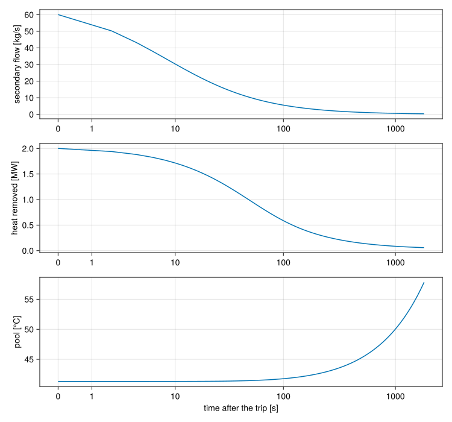
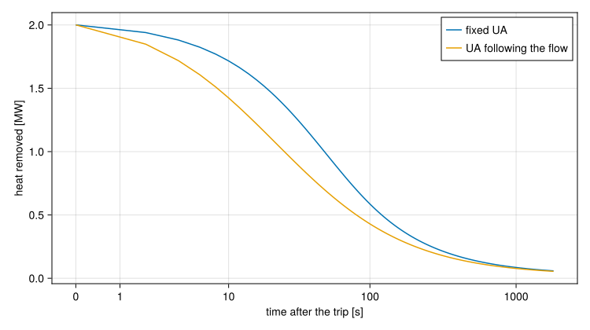

Loss of heat sink in a pool reactor
Download this tutorial as a Julia script or a Jupyter notebook.
Every earlier tutorial cooled its loop with an ideal HeatExchanger: water leaves it at a set temperature whatever arrives, so the heat sink never runs out. This tutorial takes that assumption away. The pool's heat leaves through a real exchanger to a secondary loop, the secondary pump trips, and the pool heats up with nowhere to put the core's power.
The plant has two loops joined by the exchanger. The primary pump draws water from the pool down through the core and sends it through the exchanger and back to the pool. The secondary pump circulates water from the cooling tower through the other side of the exchanger.
The numbers in this tutorial describe no real reactor. They are placeholders, sized so the model behaves as a real one would.
The primary loop
using STREAMusing STREAM.Components: Tank, Pump, Inertia, HeatExchanger, ChannelHeatFlux, Gravity, ResistorFromKnownPointusing STREAM.Assemblies: inseries, weightedusing ModelingToolkit: @named, @parameters, mtkcompileusing OrdinaryDiffEq: Rodas5Pusing SteadyStateDiffEq: DynamicSSThe pool is a Tank with its energy balance on, fixed_temperature=false. Its temperature follows the heat the loop brings it, and the whole pool's heat capacity sets how fast it warms once the exchanger stops taking heat away. The exchanger stores no heat itself, so the pool is the thermal inertia of this model.
z_core_top, z_core_bottom = 1.6, 1.0 # the core, from the pool floor [m]z_return = 5.0 # where the return line enters the pool [m]L_pool, A_pool = 6.0, 8.0 # pool level [m] and surface area [m²]@named pool = Tank(; area=A_pool, L0=L_pool, ports=(core=z_core_top, ret=z_return), T0=40.0, fixed_temperature=false)The core is 400 plate channels in parallel, which one channel stands for through weighted, as in the loss of coolant tutorial. The power is a parameter, shared evenly between the channels' walls.
N = 400P_rated = 2.0e6 # [W]geometry = PipeGeometry_rectangular(0.6, 0.067, 0.0024, 0.063)@parameters P_core = P_ratedq_wall = P_core / N / (2 * geometry.heated_parts[1] * geometry.L) # each face [W/m²]@named ch = ChannelHeatFlux(; n=10, geometry, g=-G_EARTH)core = weighted(N, ch; name=:core)Below the core the pump sends the water up through the exchanger's primary side and back to the pool. The pipes are quadratic resistances set at a design flow of 50 kg/s, and the Gravity element is the climb back up to the return nozzle.
ṁ_primary = 50.0@named pump = Pump(5.0e4)@named lift = Gravity(z_return - z_core_bottom)@named return_line = ResistorFromKnownPoint(; dp=-4.0e4, ṁ=ṁ_primary, T=45.0)The exchanger and the secondary loop
The two-stream HeatExchanger takes a conductance UA and an arrangement. It has two sides, hx.primary and hx.secondary, each a two-port with an inlet and an outlet, so each sits in its own loop like any other component. Here the streams run in counterflow.
UA = 1.2e5 # [W/K]@named hx = HeatExchanger(; UA, arrangement=HTC.Counterflow())The secondary loop's cooling tower is the ideal HeatExchanger(T) of the earlier tutorials. Water leaves the tower at 25 °C whatever arrives, which is a fair model of a tower with plenty of capacity. The secondary pump's flywheel is an Inertia: once the pump stops it keeps the water moving for a few seconds.
ṁ_secondary = 60.0T_tower = 25.0@named spump = Pump(1.0e5)@named flywheel = Inertia(1.7e4)@named tower = HeatExchanger(T_tower)@named sec_loss = ResistorFromKnownPoint(; dp=-1.0e5, ṁ=ṁ_secondary, T=30.0)Both sides of the exchanger go into the connection list as ordinary two-ports. The pool's nozzles set the primary's pressures. The secondary is a closed loop with no tank, so one pressure anchors it. The plant is built by a function of the exchanger, since later sections swap it for another.
function build_plant(hx) connections = [ inseries(pool.core, core..., pump, hx.primary, lift, return_line, pool.ret), inseries(spump, flywheel, hx.secondary, tower, sec_loss, spump), spump.inlet.p ~ 2.0e5, ch.q_left .~ q_wall, ch.q_right .~ q_wall, ] @named plant = assembly(connections, pool, core..., pump, hx, lift, return_line, spump, flywheel, tower, sec_loss) return mtkcompile(plant)endsys = build_plant(hx)Normal operation
In the steady state the pool's temperature is where the exchanger removes exactly the core's power. The solve integrates to where the plant settles, starting from the design flows. The pool takes a long time to settle, and its temperature drifts slowly near the end, so the solve asks for tight tolerances to avoid stopping early.
op = [sys.ch.inlet.ṁ => ṁ_primary / N, sys.flywheel.inlet.ṁ => ṁ_secondary]steady = (solver=DynamicSS(Rodas5P()), abstol=1e-10, reltol=1e-10)sol_ss = solve_steady(sys, op; steady...)sol_ss.retcodeReturnCode.Success = 1All of the core's power crosses the exchanger. hx.Q is the heat into the primary, so it is negative here:
Q_ss = sol_ss[sys.hx.Q]@assert isapprox(Q_ss, -P_rated; rtol=1e-3)(Q=Q_ss, pool=sol_ss[sys.pool.T], primary_flow=sol_ss[sys.hx.primary.inlet.ṁ], secondary_flow=sol_ss[sys.hx.secondary.inlet.ṁ])(Q = -2.0005742192841067e6, pool = 41.31155440238248, primary_flow = 54.995491506907925, secondary_flow = 60.04781345892035)The pool's temperature can be worked out by hand. With capacity rates $C = \dot m c_p$ on the two sides and the effectiveness ε of a counterflow exchanger, the heat removed is $P = ε C_{min} (T_{hot} - T_{tower})$, where $T_{hot}$ is the water arriving from the core. That water left the pool $P / C_p$ cooler than it reached the exchanger, so
\[T_{pool} = T_{tower} + P / (ε C_{min}) - P / C_p\]
C_p, C_s = sol_ss[sys.hx.primary.C], sol_ss[sys.hx.secondary.C]C_min, C_max = minmax(C_p, C_s)ε = HTC.effectiveness(HTC.Counterflow(), UA / C_min, C_min / C_max)T_pool_hand = T_tower + P_rated / (ε * C_min) - P_rated / C_p@assert isapprox(sol_ss[sys.pool.T], T_pool_hand; atol=0.1)(effectiveness=ε, by_hand=T_pool_hand, solved=sol_ss[sys.pool.T])(effectiveness = 0.34783056187718303, by_hand = 41.30687648981355, solved = 41.31155440238248)The two agree to a few thousandths of a kelvin. The hand calculation takes the exchanger's $c_p$ for the core too, where the core uses its own, and that is the difference.
Counterflow against parallel flow
In parallel flow both streams enter at the same end. The cold water warms and the hot water cools along the same direction, so the two approach a common temperature and the far end of the exchanger does little. The same UA then removes the core's power only from a hotter pool. One argument changes the arrangement:
@named hx = HeatExchanger(; UA, arrangement=HTC.ParallelFlow())sys_parallel = build_plant(hx)sol_parallel = solve_steady(sys_parallel, op; steady...)@assert sol_parallel[sys_parallel.pool.T] > sol_ss[sys.pool.T](counterflow=sol_ss[sys.pool.T], parallel=sol_parallel[sys_parallel.pool.T])(counterflow = 41.31155440238248, parallel = 42.67622273159713)The secondary pump trips
At $t = 0$ the secondary pump stops. Its head is a parameter, so the transient overrides it to zero, and the pool is released from the level pin the steady solve needed. The reactor stays at full power: nothing in this model trips it.
times = range(0.0, 1800.0; length=901)overrides = [sys.spump.dP_pump => 0.0, sys.pool.pinned => false]sol = solve_transient(sys, sol_ss, times; overrides)sol.retcodeReturnCode.Success = 1using CairoMakiefig = Figure(size=(750, 700))ax1 = Axis(fig[1, 1]; ylabel="secondary flow [kg/s]", xscale=Makie.pseudolog10, xticks=[0, 1, 10, 100, 1000])lines!(ax1, sol.t, sol[sys.hx.secondary.inlet.ṁ])ax2 = Axis(fig[2, 1]; ylabel="heat removed [MW]", xscale=Makie.pseudolog10, xticks=[0, 1, 10, 100, 1000])lines!(ax2, sol.t, -sol[sys.hx.Q] ./ 1e6)ax3 = Axis(fig[3, 1]; ylabel="pool [°C]", xlabel="time after the trip [s]", xscale=Makie.pseudolog10, xticks=[0, 1, 10, 100, 1000])lines!(ax3, sol.t, sol[sys.pool.T])linkxaxes!(ax1, ax2, ax3)fig
The flywheel keeps the secondary water moving, and against a quadratic resistance the flow falls off slowly, as $1 / (1 + t/τ)$ with τ about 10 s here. The heat removed falls with it, but not in proportion. At first the primary is the smaller capacity rate, and as the secondary flow drops the secondary water just leaves hotter. Once the secondary flow is the smaller of the two, the heat removed follows it down.
With the sink gone, the pool takes the core's power. Its temperature then rises at $P / (M c_p)$, the rate any well-mixed volume of water heats at, and the slope over the last ten minutes is close to that:
M = sol[sys.pool.M][end]rate_bound = P_rated / (M * cₚ(H2O, sol[sys.pool.T][end]))i0 = findfirst(>=(1200.0), sol.t)rate = (sol[sys.pool.T][end] - sol[sys.pool.T][i0]) / (sol.t[end] - sol.t[i0])residual = -sol[sys.hx.Q][end] / P_rated@assert rate < rate_bound@assert isapprox(rate, rate_bound * (1 - residual); rtol=0.05)(rate=rate, adiabatic=rate_bound, still_removed=residual)(rate = 0.009765621530699823, adiabatic = 0.010122457713859744, still_removed = 0.02937861780860776)What remains is the trickle the coasting secondary still carries. The rate is the adiabatic one reduced by that fraction.
A conductance that follows the flow
A fixed UA overstates the exchanger at low flow. Each side's film conductance falls with its flow, roughly as $\dot m^{0.8}$ in turbulent flow, and the two films are resistances in series. HTC.flow_scaled_UA builds that UA from its value at a known pair of flows, and the exchanger takes it in place of the number. The known point here is the steady state just solved, so the two exchangers agree there:
ṁp_0, ṁs_0 = sol_ss[sys.hx.primary.inlet.ṁ], sol_ss[sys.hx.secondary.inlet.ṁ]ua = HTC.flow_scaled_UA(UA, ṁp_0, ṁs_0)@named hx = HeatExchanger(; UA=ua)sys_scaled = build_plant(hx)sol_ss_scaled = solve_steady(sys_scaled, op; steady...)sol_scaled = solve_transient(sys_scaled, sol_ss_scaled, times; overrides=[sys_scaled.spump.dP_pump => 0.0, sys_scaled.pool.pinned => false])sol_scaled.retcodeReturnCode.Success = 1The steady pool is the same as before. After the trip the flow-dependent exchanger loses its heat sink faster:
fig = Figure(size=(750, 420))ax = Axis(fig[1, 1]; xlabel="time after the trip [s]", ylabel="heat removed [MW]", xscale=Makie.pseudolog10, xticks=[0, 1, 10, 100, 1000])lines!(ax, sol.t, -sol[sys.hx.Q] ./ 1e6; label="fixed UA")lines!(ax, sol_scaled.t, -sol_scaled[sys_scaled.hx.Q] ./ 1e6; label="UA following the flow")axislegend(ax)fig
@assert isapprox(sol_ss_scaled[sys_scaled.pool.T], sol_ss[sys.pool.T]; atol=1e-3)@assert -sol_scaled[sys_scaled.hx.Q][end] < -sol[sys.hx.Q][end](fixed=sol[sys.pool.T][end], scaled=sol_scaled[sys_scaled.pool.T][end])(fixed = 57.82753798017936, scaled = 58.11360366623835)The pool ends a little warmer with the flow-dependent UA. The difference is small here because the pool's heat capacity, not the exchanger, sets the pace once the sink is gone.
What the model leaves out
The exchanger holds no water and no metal, so its outlets follow its inlets at once. That is fair when the pool's inventory dwarfs the exchanger's, as here. The pool loses no heat through its surface, by evaporation or otherwise, so the heat-up is an upper bound. And the reactor stayed at full power throughout: a real plant trips on a high pool temperature, and with temperature feedback the power would fall on its own as the pool warms. Heat exchangers and the heat sink gives the physics behind the exchanger and its limits.